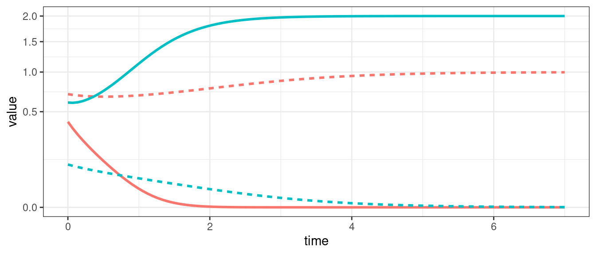
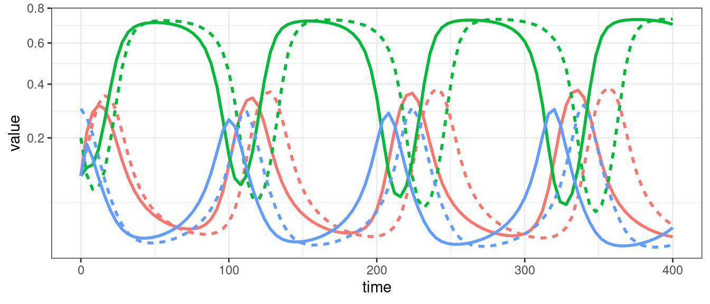

Lecture 3 Generalized Lotka-Volterra model
Lesson plan:
- We start by discussing the Generalized Lotka-Volterra model, which we are going to see over and over again in the remainder of the lectures.
- We discuss the existence of equilibria in the case of \(n\) populations.
- We show that the GLV model can give rise to all sort of dynamics, including limit cycles and chaos.
- We show that a positive equilibrium is necessary for coexistence, and that, when populations coexist, the equilibrium is the time-average of the trajectories.
- We show how to perform local stability analysis for GLV.
- We introduce D-stability, allowing us to write a Lyapunov function to determine global stability in GLV models.
- We conclude by analyzing the MacArthur’s consumer-resource model, highlighting its deep connection to GLV.
3.1 Formulation
We can write the Generalized Lotka-Volterra model as:
\[ \dfrac{dx(t)}{dt} = D(x(t))(r + A x(t)) \]
where \(x(t)\) is a (column) vector of length \(n\) containing the densities of all populations \(1, \ldots, n\) at time \(t\), \(r\) is a vector of “intrinsic growth rates” (or death rates, when negative), measuring the growth (decline) of population \(i\) when grown alone at low density, and \(A\) is a \(n \times n\) matrix of interaction coefficients. We use \(D(x)\) to denote the diagonal matrix with \(x\) on the diagonal.
In component form, we have (dropping the dependence on \(t\)):
\[ \dot{x}_i = x_i \left(r_i + \sum_j A_{ij} x_j \right) \]
Sometimes the model is written in a slightly different way, by bringing the vector \(r\) outside the parenthesis:
\[ \begin{aligned} \dot{x}_i &= x_i \left(r_i + \sum_j A_{ij} x_j \right)\\ &= r_i x_i \left(1 + \frac{1}{r_i} \sum_j A_{ij} x_j\right)\\ &= r_i x_i \left(1 + \sum_j B_{ij} x_j\right)\\ \end{aligned} \]
where we have defined \(B_{ij} = A_{ij} / r_i\). In matrix form, we obtain:
\[ \dot{x} = D(x \circ r) \left(1_n + Bx \right) \]
where \(\circ\) is the Hadamard (element by element) product. This notation is convenient when computing the equilibria of the system; the previous notation is more convenient when investigating their stability. We will alternate between the two notations, using \(A\) and \(B = D(r)^{-1} A\) for the two matrices.
3.2 A single population
The simplest case to study is that of a single population, in which case the equation becomes that of the logistic growth:
\[ \dfrac{dx(t)}{dt} = x(t)(\rho + \alpha x(t)) \]
Note that whenever \(\rho > 0\) and \(\alpha < 0\) there exists a feasible equilibrium \(x^\star = \rho / \alpha\). The equilibrium is globally stable (as shown using either a quadratic Lyapunov function, or the \(V = x - x^\star - x^\star \log (x / x^\star)\)). As we’ve seen before, this is a separable ODE, with solution:
\[ x(t) = \frac{\rho\, {x_0}\, e^{\rho t}}{\rho- \alpha\, {x_0} \left(e^{\rho t}-1\right)} \]
3.2.1 Metapopulation dynamics
Consider a fragmented landscape in which habitable patches are connected by dispersal (for simplicity, suppose that all patches are reachable from any other). Call \(p(t)\) the proportion of patches occupied by the species of interest at time \(t\), and assume that a) an empty patch (the proportion of empty patches is \(1 - p(t)\)) is colonized by the populations in other patches with rate \(\gamma\, p(t)\), where \(\gamma\) is the “colonization rate”, and b) that occupied patches become empty at rate \(\epsilon\, p(t)\) (“extinction rate”). We want to model the proportion of patches occupied by the population at time \(t\) (Levins 1969):
\[ \dfrac{d p(t)}{dt} = \gamma\, p(t)(1 - p(t)) - \epsilon\, p(t) = p(t) ((\gamma - \epsilon) - \gamma\, p(t)) \]
which is equivalent to the logistic equation above with \(\rho = \gamma -\epsilon\) and \(\alpha = -\gamma\). As such, asymptotically the proportion of patches occupied by the population will be \(-\rho/\alpha = (\gamma -\epsilon) / \gamma = 1 - \epsilon / \gamma\).
3.2.2 S-I-S model
Consider a population of individuals, each of which can be in one of two states: susceptible to a disease, or infective/infected. Call \(S(t)\) the proportion of susceptible individuals at time \(t\), and \(I(t)\) the proportion of infected individuals, with \(S(t) + I(t) = 1\). When individuals meet, an infected individual can transmit the disease to susceptibles with rate \(\beta\); infected individuals recover from the disease with rate \(\gamma\), and return susceptible. We can write the system of equations:
\[ \begin{cases} \dfrac{d S(t)}{dt} = -\beta S(t) I(t) + \gamma I(t)\\ \dfrac{d I(t)}{dt} = \beta S(t) I(t) - \gamma I(t) \end{cases} \]
Note that the equations sum to zero, because the quantity \(S(t)+I(t)=1\) is conserved through the dynamics. Take the second equation, and substitute \(S(t) = 1 - I(t)\); rearranging:
\[ \dfrac{d I(t)}{dt} = \beta (1-I(t)) I(t) - \gamma I(t) = I(t)(\beta - \gamma -\beta I(t)) \]
which is again the equation for the logistic growth with \(\rho = \beta - \gamma\) and \(\alpha = -\beta\). As such, provided that \(\beta -\gamma > 0\), asymptotically a fraction \((\beta - \gamma) / \beta\) of individuals will be infected. The condition \(\beta -\gamma > 0 \to \beta > \gamma \to \beta/ \gamma > 1\) is often written as \(\mathcal R_0 = \beta/ \gamma > 1\).
3.3 Multi-species dynamics
3.3.1 Existence of an equilibrium
Returning to the multi-species system, and in analogy with the single species model, we can look for stationary points (fixed points, equilibria).
If an equilibrium \(x^\star\) in which all populations are present exists, it must be the solution of
\[ \begin{aligned} 1_n + Bx^\star &= 0_n\\ Bx^\star &= - 1_n\\ x^\star &= -B^{-1} 1_n \end{aligned} \]
when the matrix \(B\) is invertible. Naturally, the equilibrium must be positive (called feasible) to be biologically attainable.
For example, consider:
\[ A = \begin{pmatrix} -4 & -1 & -3\\ -14 & -8 & -10\\ -6 & -15 & -13 \end{pmatrix} \quad r = \begin{pmatrix} 8\\ 32\\ 34 \end{pmatrix}\quad B = D(r)^{-1}A = \begin{pmatrix} -\frac{1}{2} & -\frac{1}{8} & -\frac{3}{8}\\ -\frac{7}{16} & -\frac{1}{4} & -\frac{5}{16}\\ -\frac{3}{17} & -\frac{15}{34} & -\frac{13}{34} \end{pmatrix} \]
There is an equilibrium when at which all populations are present:
\[ x^\star = -A^{-1} r = -B^{-1}1_n = \begin{pmatrix} 1\\ 1\\ 1 \end{pmatrix} \]
If the matrix \(B\) is rank-deficient (and thus singular) there are infinitely many equilibria; for example, if the rank of \(B\) is \(n-1\) there are infinitely many equilibria belonging to a line in \(\mathbb R^n\).
When \(B\) is nonsingular, the model admits at most one positive equilibrium in which all populations are present. However, there can be up to \(2^n-1\) equilibria in which one or more populations are absent/extinct. Call \(B^{(k,k)}\) the submatrix of \(B\) obtained by retaining the rows and columns indexed by the set \(k\). Then by solving
\[ B^{(k,k)} x^{(k)\star} = -1_{\|k\|} \]
we obtain an equilibrium for the subcommunity where only the populations in \(k\) are present (provided that the equilibrium is feasibile).
For the example above, we have:
\[ B^{(\{1,2\},\{1,2\})} = \begin{pmatrix} -\frac{1}{2}& -\frac{1}{8}\\ -\frac{7}{16} & -\frac{1}{4} \end{pmatrix} \]
and
\[ x^{(\{1,2\})\star} = -(B^{(\{1,2\},\{1,2\})})^{-1}1_2=\begin{pmatrix} \frac{16}{9}\\ \frac{8}{9} \end{pmatrix} \]
Therefore, the subsystem in which only the first two populations are present yields a feasible equilibrium.
Similarly,
\[ x^{(\{1,3\})\star} = \begin{pmatrix} \frac{1}{17}\\ \frac{44}{17} \end{pmatrix} \quad x^{(\{1\})\star} = \begin{pmatrix} 2\\ \end{pmatrix} \quad x^{(\{2\})\star} = \begin{pmatrix} 4\\ \end{pmatrix} \quad x^{(\{3\})\star} = \begin{pmatrix} \frac{34}{13}\\ \end{pmatrix} \]
The subsystem in which only populations 2 and 3 are present does not yield a feasible equilibrium.
3.3.2 Types of dynamics
For a single population, the GLV model can yield only two outcomes: unbounded growth, or convergence to an equilibrium; if the equilibrium is \(x^\star = 0\), we say that the population is extinct at the equilibrium.

When we have two populations, we can also observe neutral cycles (as in the classic LV predator-prey system), and bistability (i.e., one population survives, while the other goes extinct; the identity of the population going extinct depends on the initial conditions).

For three populations we can observe limit cycles.

For three or more populations (in the general case), or four or more populations (in competitive systems), we can have chaos (i.e., non-periodic oscillations).

3.3.3 Equilibrium as time-average
Suppose that \(x(t)\) has a periodic orbit, of period \(T\) (i.e., we assume \(x(0) = x(T)\)). Further, assume that the GLV has a feasible, interior equilibrium \(x^\star\). We want to calculate the average density for each population:
\[ \frac{1}{T} \int_0^T x(t) dt \]
First, we assume that \(x(t) > 0\) and write the dynamics of its logarithm:
\[ \dfrac{d \log(x_i(t))}{dt} = \dfrac{1}{x_i(t)}\dfrac{d x_i(t)}{dt} = r_i + \sum_j A_{ij} x_j(t) \]
In vector form:
\[ \dfrac{d \log{x(t)}}{dt}= r + A x(t) \]
Compute the average on both sides:
\[ \frac{1}{T}\int_0^T \frac{d \log(x(t))}{dt} dt= \frac{1}{T}\int_0^T \left(r + Ax(t) \right) dt \]
yielding:
\[ \frac{1}{T}(\log(x(T)) - \log(x(0))) = 0_n = r + A \left( \frac{1}{T} \int_0^T x(t) dt \right) \]
Note that the l.h.s. is zero because \(x(0) = x(T)\). Now rearrange:
\[ -r = A \left( \frac{1}{T} \int_0^T x(t) dt \right) \]
Multiplying by the matrix inverse:
\[ -A^{-1} r = x^\star = \frac{1}{T} \int_0^T x(t) dt \]
showing that the average density is in fact the equilibrium. With a similar argument, one can prove that if the trajectory stays in a compact space (i.e., in case of chaotic attractors), then the long-time average is still \(x^\star\).

Figure 3.1: Semi-transparent lines: trajectories; dashed lines: equilibrium values; solid line: (cumulative) average of trajectory.
3.3.4 Coexistence requires a feasible equilibrium
A necessary condition for the coexistence of populations is the existence of a positive (feasible) equilibrium.
Farkas’ lemma
Consider matrix \(A\), of size \(n \times n\), and the vector \(b\), of length \(n\).
Then either:
\[ \exists x \geq 0_n \quad \mid \quad Ax = b \]
or:
\[ \exists y \in \mathbb R^n \quad \mid \quad A^T y \geq 0_n \;\text{and}\; b^T y < 0 \]
Suppose that the system does not have a feasible equilibrium, i.e., an \(x^\star > 0_n\) such that \(Ax^\star = -r\). Then, there must exist a \(y\) such that \(A^T y \geq 0_n\) and \(r^T y > 0\).
But then, consider the function:
\[ P = \prod_i x_i^{y_i} \]
The function is positive when all \(x_i > 0\). Differentiating with respect to time, we find:
\[ \begin{aligned} \dot{P} &= \sum_i\left( y_i \dot{x}_i x_i^{y_i - 1} \prod_{j \neq i} x_j^{y_j} \right)\\ &=\sum_i\left( y_i \frac{\dot{x}_i}{x_i} \prod_{j} x_j^{y_j} \right)\\ &= P \sum_i y_i \left(r_i + \sum_j A_{ij} x_j\right)\\ &= P (y^T r + y^T A x) \end{aligned} \]
but by Farkas’ lemma, we have that \(y^T r > 0\) and \(y^TA \geq 0_n^T\); then \(P\) always grows in time, and eventually diverges to \(\infty\).
Note that \(P(t) \to \infty\) requires some \(x_i^{y_i}(t) \to \infty\), which happens when either \(x_i(t) \to \infty\) and \(y_i > 0\) (i.e., a population grows without bound), or \(x_i(t) \to 0\) and \(y_i < 0\) (i.e., a population goes extinct). Thus, in the absence of an equilibrium, trajectories can either diverge to infinity, or one or more populations can go extinct.
A feasible equilibrium is therefore a necessary condition for coexistence.
3.3.5 Local stability of the coexistence equilibrium
Suppose that a feasible equilibrium \(x^\star\) exists: \(x^\star = -A^{-1}r > 0_n\). We have:
\[ J_{ii} = \dfrac{\partial (r_i x_i + \sum_j A_{ij} x_i x_j)}{\partial x_i} = r_i + \sum_j A_{ij} x_j + A_{ii} x_i \]
At equilibrium, we have:
\[ r_i + \sum_j A_{ij} x_j^\star = 0 \]
and therefore
\[ M_{ii} = \left. J_{ii} \right|_{x^\star} = A_{ii} x_i^\star \]
Similarly,
\[ J_{ii} = \dfrac{\partial (r_i x_i + \sum_j A_{ij} x_i x_j)}{\partial x_j} = A_{ij} x_i \]
and thus
\[ M_{ij} = \left. J_{ij} \right|_{x^\star} = A_{ij} x_i^\star \]
Putting them together, we obtain:
\[ M = \left. J \right|_{x^\star} = D(x^\star)A \]
and thus the equilibrium is l.a.s. if and only if all of the eigenvalues of \(D(x^\star)A\) have negative real part.
Matrix similarity
Two square matrices \(A\) and \(B\) are called similar if there exists an invertible matrix \(P\) such that:
\[ B = P A P^{-1} \]
The two matrices \(A\) and \(B\) share many properties; notably, they have the same eigenvalues.
Matrix congruence
Two square matrices \(A\) and \(B\) are called congruent if there exists an invertible matrix \(P\) such that:
\[ B = P A P^T \]
Further, if \(A\) and \(B\) are real and symmetric, then the number of positive, negative and zero eigenvalues in the two matrices are the same (Sylvester’s law of inertia).
If the matrix \(A\) is symmetric, any feasible equilibrium is stable if and only if the eigenvalues of \(A\) are all negative (i.e., \(A\) is negative definite). To prove this, take \(A = A^T\) and consider the similarity transformation
\[ \begin{aligned} D(x^\star)^{-\frac{1}{2}} D(x^\star) A D(x^\star)^{\frac{1}{2}}\\ D(x^\star)^{\frac{1}{2}} A D(x^\star)^{\frac{1}{2}}\\ \end{aligned} \]
The matrices \(D(x^\star) A\) and \(D(x^\star)^{\frac{1}{2}} A D(x^\star)^{\frac{1}{2}}\) are similar, and thus have the same eigenvalues; the matrices \(A\) and \(D(x^\star)^{\frac{1}{2}} A D(x^\star)^{\frac{1}{2}}\) are congruent, and thus have the same number of positive, negative and zero eigenvalues by Sylvester’s law of inertia.
A symmetric matrix is negative definite if all its submatrices obtained by deleting a set of rows and the corresponding columns are negative definite as well. Then, if \(A = A^T\) is negative definite, a) a feasible equilibrium is locally stable, and b) for any subsystem, feasibility implies local stability.
Note that this is generally not the case for nonsymmetric matrices \(A\), in which case we could have that \(A\) has all eigenvalues with a negative real part, while \(D(x^\star)A\) has some eigenvalues with positive real part (or viceversa). For example, take
\[ A = \begin{pmatrix} -3 & 4 & 0\\ 5 & -2 & -2\\ 5 & 5 & -3 \end{pmatrix} \quad \lambda(A) = \{-7,\frac{1}{2}(-1 \pm i \sqrt{15}) \} \]
and the equilibrium \(x^\star = (1,1,1/2)^T\) (obtained for \(r = (-1, -2, -17/2)\)); we obtain:
\[ M = D(x^\star)A = \begin{pmatrix} -3 & 4 & 0\\ 5 & -2 & -2\\ \frac{5}{2} & \frac{5}{2} & -\frac{3}{2} \end{pmatrix} \quad \lambda(B) = \{-7,\frac{1}{4}(1 \pm i\sqrt{31}) \} \]
Thus, the equilibrium is not locally asymptotically stable.
D-stability and Lyapunov-Diagonal Stability
A matrix \(A\) is called stable if all its eigenvalues have negative real part. A matrix \(A\) is called D-stable if \(D(x) A\) is stable for every choice of \(x\) such \(x_i > 0\; \forall i\). While conditions for D-stability are not known for matrices of size greater than 3, a sufficient condition for D-stability is that there exists a diagonal matrix \(D\) with positive elements on the diagonal such that \(DA + A^T D\) is negative definite (i.e., has negative eigenvalues).
Consequences for Lotka-Volterra dynamics
- If a matrix \(A\) is stable and symmetric, it is D-stable (just take \(D = I\)).
- Take a GLV system with a stable, non symmetric matrix \(A\) such that \(A + A^T\) is negative definite. Then any feasible equilibrium is locally stable: we have \(M = D(x^\star)A\), but if \(A\) is D-stable then \(M\) is stable.
3.3.6 Lyapunov diagonal stability and global stability
A candidate Lyapunov function for GLV is due to Goh, and shows that, whenever there exists a positive diagonal matrix \(D(w)\) such that \(D(w)A^T + AD(w)\) is negative definite, then the equilibrium \(x^\star > 0_n\) is globally stable. A matrix with this property is called Lyapunov diagonally stable.
We start with the simplest case in which \(w = 1_n\) and thus \(D(w) = I\). Take the function
\[ V(x(t)) = \sum_i \left(x_i - x_i^\star - x_i^\star \log \frac{x_i}{x_i^\star} \right) \]
The function is positive for every \(x \in \mathbb {R^n}_+\), because \(z - 1 - \log z \geq 0\) whenever \(z > 0\); take \(z = x_i / {x_i}^\star\) and then multiply by \({x_i}^\star\) to prove that the function is nonnegative.
Differentiating with respect to time, we find:
\[ \begin{aligned} \dot{V}(x(t)) &= \sum_i \left(\dot{x}_i - x_i^\star \frac{\dot{x}_i}{x_i} \right)\\ &= \sum_i \left(x_i (r_i + (Ax)_i) - x_i^\star (r_i + (Ax)_i)\right)\\ &=\sum_i \Delta x_i (-(Ax^\star)_i + (Ax)_i )\\ &=\sum_{i,j}\Delta x_i A_{ij} \Delta x_j\\ &=\Delta x^T A \Delta x\\ &=\frac{1}{2}\Delta x^T (A + A^T)\Delta x\\ \end{aligned} \]
Thus, if the symmetric part of \(A\), \(H(A) = \frac{1}{2} (A + A^T)\) is negative definite, then \(\dot{V}(x(t))<0\) for every \(\Delta x \neq 0\) and the equilibrium is stable.
To extend the reach of the candidate function, consider the change of variables:
\[ z_i = x_i / w_i \quad x_i = w_i z_i \]
with \(w_i>0\). This change of variables cannot impact the existence or stability of equilibria (we are simply changing the units of measure we are using to measure the density of each population). Then,
\[ \dot{z_i} = \frac{\dot{x}_i}{w_i} = \frac{x_i}{w_i}(r_i + (Ax)_i) = z_i(r_i + (AD(w)z)_i)=z_i(r_i + (\tilde{A}z)_i) \]
Thus, if \(H(\tilde{A}) = \frac{1}{2} (AD(w) + D(w)A^T)\) is negative definite, the equilibrium is stable.
3.4 MacArthur’s consumer-resource model
History: Robert H. MacArthur (1930-1972)

Robert MacArthur was born in Toronto, and moved to Vermont when his father (a geneticist) became a professor at Marlboro College.
He studied mathematics first at Marlboro College and then at Brown University. He enrolled as a PhD student in mathematics at Yale, but quickly switched to studying ecology with George Evelyn Hutchinson.
He was a professor first at the University of Pennsylvania and then at Princeton University. In his brief career (he died at age 42) he revolutionized ecology, by making it into a rigorous, predictive science based on general principles.
He is recognized for developing the Theory of Island Biogeography (with E. O. Wilson, MacArthur and Wilson (2001)), the investigation of limiting similarity (with R. Levins, MacArthur and Levins (1967)), the contributions to the complexity-stability debate (MacArthur (1955), see next lecture). The consumer-resource model he proposed in 1969 now bears his name (published also in MacArthur (1970) in a longer form—the first paper in the journal Theoretical Population Biology!).
MacArthur considered a system with two classes of equations: those describing the dynamics of consumers \((x_i)\) and resources (\(y_i\)). Resources do not interact with each other (only with themselves), and consumers interact only through the sharing of resources. Several parameterizations are possible—here we choose a simple formulation that retains the main features of the model (see Case and Casten (1979) for a slightly more general model):
\[ \begin{cases} \dfrac{d y_i}{dt} = y_i \left(r_i - b_i\, y_i - \sum_j P_{ij}\, x_j \right)\\ \dfrac{d x_j}{dt} = x_j \left(- m_j + \sum_i v_j\, P_{ij}\, y_i \right)\\ \end{cases} \]
In the absence of consumers, each resource grows logistically. In the absence of resources, consumers go extinct. In the model, all parameters are taken to be positive: \(r_i\) is the growth rate for resource \(i\), \(b_i\) models its self-regulation; \(m_j\) is the death rate of consumer \(j\), and \(v_j\) models the efficiency of transformation of resources into consumers. The matrix \(P\) is in general rectangular (\(n \times k\), where \(n\) is the number of resources and \(k\) that of consumers).
Block matrices
Any matrix can be rewritten as a series of smaller matrices stitched together. For square matrices, it is often convenient to partition a matrix into blocks such that diagonal blocks are square matrices and off-diagonal blocks are (in general) rectangular.
For example:
\[ M = \begin{pmatrix} 1 & 2 & 3 & 4 & 5\\ 6 & 7 & 8 & 9 & 10\\ 11 & 12 & 13 & 14 & 15\\ 16 & 17 & 18 & 19 & 20\\ 21 & 22 & 23 & 24 & 25\\ \end{pmatrix} \]
Can be written as:
\[ M = \begin{pmatrix} M_{11} & M_{12}\\ M_{21} & M_{22} \end{pmatrix} \] with:
\[ M_{11} = \begin{pmatrix} 1 & 2 \\ 6 & 7 \end{pmatrix} \; M_{21} = \begin{pmatrix} 3 & 4 & 5\\ 8 & 9 & 10\\ \end{pmatrix} \;\ldots \]
Multiplication of block matrices
The multiplication of two block matrices with square diagonal blocks is very easy:
\[ \begin{pmatrix} A_{11} & A_{12}\\ A_{21} & A_{22} \end{pmatrix} \begin{pmatrix} B_{11} & B_{12}\\ B_{21} & B_{22} \end{pmatrix} = \begin{pmatrix} A_{11}B_{11} + A_{12} B_{21}& A_{11}B_{12} + A_{12} B_{22}\\ A_{21}B_{11} + A_{22} B_{21} &A_{21}B_{12} + A_{22} B_{22} \end{pmatrix} \]
Determinant of block matrices
Take
\[ A = \begin{pmatrix} A_{11} & A_{12}\\ A_{21} & A_{22} \end{pmatrix} \]
and assume that \(A_{22}\) is invertible. Then \(\det(A) = \det(A_{22})\det(A_{11} - A_{12}A_{22}^{-1} A_{21})\)
Inverse of block matrix
Similarly, if \(A_{22}\) is invertible, and \(\det(A) \neq 0\) (and hence the Schur complement \(A_{11} - A_{12}A_{22}^{-1} A_{21}\) is nonsingular) then
\[ A^{-1} = \begin{pmatrix} S & -S A_{12}A_{22}^{-1}\\ -A_{22}^{-1} A_{21} S & A_{22}^{-1} + A_{22}^{-1} A_{21}SA_{21}A_{22}^{-1} \end{pmatrix} \]
where \(S = (A_{11} - A_{12}A_{22}^{-1} A_{21})^{-1}\)
We can rewrite the system as a generalized Lotka-Volterra model (see Case and Casten (1979)). We define:
\[ z = (y,x)^T\;\;s = (r, -m)^T \]
And the block structured matrix \(A\):
\[ A = \begin{pmatrix} A_{11} & A_{12}\\ A_{21} & A_{22} \end{pmatrix}\; \text{with}\; A_{11} = -D(b),\; A_{12}=-P,\; A_{21} = D(v)P^T, A_{22} = 0_{k,k} \]
where \(0_{k,k}\) is a \(k \times k\) matrix of zeros. Now the system becomes:
\[ \dfrac{d z}{d t} = D(z)(s + Az) \]
3.4.1 Existence of an equilibrium
For simplicity, we concentrate on the study of the feasibility and stability of the coexistence equilibrium. If an equilibrium \(z^\star \neq 0\) exists, it is the solution of \(A z^\star = -s\), which requires matrix \(A\) to be non-singular. Matrix \(A\) is non-singular only if \(w = 0\) is the only solution of \(Aw = 0\). We prove that \(A\) is non-singular whenever \(A_{12}\) is of rank \(k\), and \(A_{11}\) is negative definite. We do so by contradiction. First, because the matrix \(A\) has a special structure, we can split \(w\) into \((w_1, w_2)^T\), and write:
\[ A \begin{pmatrix} w_1\\ w_2 \end{pmatrix} = \begin{pmatrix} A_{11}w_1 + A_{12} w_2\\ A_{21}w_1 \end{pmatrix} = \begin{pmatrix} 0_n\\ 0_k \end{pmatrix} \]
We therefore have \(A_{21} w_1 = 0\) and \(A_{11}w_1 + A_{12} w_2 = 0\).
- Suppose that \(w_1 =0\) and \(w_2 \neq 0\); then we find \(A_{12} w_2 = 0\) with \(w_2 \neq 0\), which is not possible when \(A_{12}\) has rank \(k\).
- Now suppose that \(w_1 \neq 0\) and \(w_2 = 0\), but this implies \(A_{11}w_1 = 0\) with \(w_1 \neq 0\), which is impossible given that \(A_{11}\) is clearly of full rank (rank \(n\)).
- We are left with the case in which both \(w_1 \neq 0\) and \(w_2 \neq 0\). We have \(A_{21} w_1 = 0\), but \(A_{21} w_1= D(v)P^T w_1 = 0\), which implies \(P^T w_1 = 0\) because all \(v_i > 0\). Then, multiply the first set of equations by \(w_1^T\) and the second by \(w_2^T\). We obtain \(w_1^T A_{11} w_1 - w_1^T P w_2 = 0\) and \(w_2^T D(v)P^T w_1 = 0 = w_2^T P^T w_1\). But then \(w_1^T P w_2 = 0\), leaving us with \(w_1^T A_{11} w_1 = 0\) with \(w_1 \neq 0\), which is again a contradiction because \(A_{11}\) is clearly negative definite (and as such \(w_1^T A_{11} w_1 \leq 0\), with equality implying \(w_1 = 0\)).
We have proven that \(A\) is non-singular, and therefore a unique equilibrium point for the system exists (the equilibrium for the moment needs not to be feasible) whenever \(A_{11} = -D(b)\) is negative definite (which is always the case whenever resources are self-regulating) and, importantly, \(A_{12}\) has rank \(k\) (the number of consumers). This in turn implies that the number of resources must be larger (or equal) than the number of consumers. A similar argument is developed in the classic Levin (1970).
Key paper: Levin (1970)
Starting from fairly generic assumptions, the principle of competitive exclusion is generalized: No stable equilibrium can be attained in an ecological community in which some \(r\) components are limited by less than \(r\) limiting factors. In particular, no stable equilibrium is possible if some \(r\) species are limited by less than \(r\) factors.
3.4.2 Global stability
Next, we prove that if a feasible equilibrium for the system exists, it is globally stable. First, we choose a diagonal matrix \(G\)
\[ G = \begin{pmatrix} I_n & 0_{n,k}\\ 0_{k,n} & D(v)^{-1} \end{pmatrix} \]
We have:
\[ B = GA = \begin{pmatrix} -D(b) & -P\\ P^T & 0_{k,k} \end{pmatrix} \]
\(B\) is therefore negative semi-definite:
\[ \frac{1}{2}(B + B^T) = \begin{pmatrix} -D(b) & 0_{n,k}\\ 0_{k,n} & 0_{k,k} \end{pmatrix} \]
with eigenvalues \(-b\) and \(0\) (with multiplicity \(k\)). Therefore,
\[ \begin{aligned} \frac{d V(z(t))}{dt} &= 1^T G \left(\frac{d z(t)}{dt} - D(z^\star) \frac{d \log z(t)}{dt} \right)\\ &= \frac{1}{2}(z - z^\star)^T (GA + A^T G) (z - z^\star)\\ &= \frac{1}{2}(z - z^\star)^T (B + B^T) (z - z^\star)\\ &= (y - y^\star)^T (-D(b)) (y - y^\star) \end{aligned} \]
which is zero only when the resources are at equilibrium. We can invoke LaSalle’s invariance principle to prove that any feasible equilibrium is stable.
Homework 3a
Prove the local stability of the feasible coexistence equilibrium.
Hint: if we have a (not necessarily symmetric) matrix \(A\) such that \(x^T A x < 0\) for every \(x \in \mathbb R^n\), with \(x\neq 0\), then the eigenvalues of \(A\) have negative real part. To prove this, consider a generic eigenvector/eigenvalue of \(A\):
\[ \begin{aligned} A v &= \lambda v\\ A (u + i w) &= (\alpha + i \beta)(u + i w)\\ Au + i Aw &= \alpha u - \beta w+ i (\alpha w + \beta u) \end{aligned} \] Write two systems of equations, one for the real parts, and one for the imaginary parts:
\[ \begin{cases} Au = \alpha u - \beta w\\ Aw = \alpha w + \beta u \end{cases} \]
Multiply the first set of equations by \(u^T\), and the second by \(w^T\):
\[ \begin{cases} u^TAu = \alpha u^Tu - \beta u^Tw\\ w^TAw = \alpha w^Tw + \beta w^Tu \end{cases} \]
Sum the two equations:
\[ u^T A u +v^T A v = \alpha (u^Tu + w^T w) \]
If we have that \(x^T A x < 0\) for any \(x\neq 0\), then the left-hand side is negative whenever either \(u \neq 0\), \(v \neq 0\), or both are nonzero. In the right-hand side, we have that \(u^Tu = \sum_i u_i^2 \geq 0\), and \(v^Tv \geq 0\). Moreover if \(x = u + i v\) is an eigenvector, necessarily at least one of \(u\) and \(v\) is nonzero. Thus the left-hand side is negative, and the part in parenthesis in the right-hand side is positive. Then, \(\alpha < 0\), proving that all eigenvalues have a negative real part.
Use this argument to prove local stability of the consumer-resource model.
3.4.3 Separation of time-scales
In the original article, MacArthur (1970) takes an interesting shortcut, which can shed light on the behavior of the GLV when the matrix of interactions is symmetric (i.e., \(A = A^T\)). Consider the Consumer-Resource model above, and assume that resources equilibrate quickly compared to the dynamics of the consumers. In practice, this means that the system operates on two different time scales, such that the consumers perceive resources to be constantly at equilibrium.
We solve the equations for the resources:
\[ \begin{aligned} r - D(b)\, y - P\, x &=0\\ y = D(b)^{-1} (r - P\,x) \end{aligned} \]
Substituting in the equations for the consumers, we obtain:
\[ \begin{aligned} \dfrac{d x}{dt} &= D(x) \left(- m + D(v) P^T\, y \right)\\ &= D(x) \left(- m + D(v) P^T\, D(b)^{-1} (r - P\,x) \right)\\ &= D(x) \left([D(v) P^T\, D(b)^{-1} r - m] - [D(v) P^T\, D(b)^{-1} P]\,x\right)\\ &= D(x) D(v)\left([P^T\, D(b)^{-1} r - D(v)^{-1}m] - [P^T\, D(b)^{-1} P]\,x\right)\\ &= D(x) D(v)\left(s - B\,x\right) \end{aligned} \]
Which is again GLV, with growth rates \(s = P^T\, D(b)^{-1} r - D(v)^{-1}m\) and interaction matrix \(B = P^T D(b)^{-1} P\), which, importantly, is symmetric (note also that if \(P\) is of rank \(k\) and \(b > 0\), then \(B\) is of full rank).
3.4.4 Lyapunov function for symmetric Lotka-Volterra
We have the equations:
\[ \dfrac{d x_i}{d t} = x_i v_i \left(s_i - \sum_{j} B_{ij} x_j \right) \]
At equilibrium, we have \(x^\star = B^{-1} s\). Consider the function:
\[ V(x(t)) = 2 \sum_i s_i x_i - \sum_{ij} B_{ij} x_i x_j \]
Note that \(\sum_i s_i x_i > 0\) and that whenever \(B\) is stable (and because it’s symmetric, negative definite), \(- \sum_{ij} B_{ij} x_i x_j > 0\). At equilibrium, we have:
\[ V( x^\star ) = \sum_i \left(s_i x_i^\star + \left(s_i x_i^\star - \sum_j B_{ij} x_j^\star \right) \right) = \sum_i s_i x_i^\star \]
It is of particular interest the case in which \(s_i = 1\) for all \(i\) and \(V(x^\star)\) is simply the total biomass of the system at equilibrium.
Now, let’s take the derivative of \(V(x(t))\) with respect to \(x_i\):
\[ \dfrac{\partial V}{\partial x_i} = 2 s_i - 2 \sum_j B_{ij} x_j \]
The \(2\) in front of the \(B_{ij}\) stems from the fact that we are summing over both \(B_{ij} x_i x_j\) and \(B_{ji} x_j x_i\). But then:
\[ \dfrac{d x_i}{d t} = x_i v_i \left(s_i -\sum_j B_{ij} x_j\right) = x_i v_i \frac{1}{2}\dfrac{\partial V}{\partial x_i} \]
And therefore, by chain rule:
\[ \dfrac{d V} {d t} = \sum_i \dfrac{\partial V}{\partial x_i} \dfrac{d x_i}{d t} = \sum_i x_i v_i \frac{1}{2}\left(\dfrac{\partial V}{\partial x_i} \right)^2 \]
which is always non-negative, and is zero at equilibrium. Therefore, \(V(x(t))\) is maximized through the dynamics. This holds even more generally, as we will see in the lecture on assembly and in the following homework. In a way, symmetric, competitive dynamics are “optimizing” \(V\), by following a gradient. This argument can be further expanded, showing that many ecological models can be interpreted as optimization processes (Marsland III et al. (2019)).
Homework 3b
Consider a five-species system with symmetric, stable \(B\) (with all positive coefficients) and positive \(s\), yielding the feasible equilibrium \(x^\star\).
- Find random parameters satisfying 1) \(B_{ij} = B_{ji} > 0\; \forall i,j\); 2) \(B\) is stable; 3) \(s_i > 0 \; \forall i\); 4) \(B^{-1}s = x^\star > 0\). These parameters define your pool of species.
- For each possible subset of species in the pool, (i.e., for all combinations ranging from a single species [5 cases], to two species [10 cases], \(\ldots\), to all species together [1 case]), compute the corresponding equilibrium. Is it feasible? Is it stable?
- Take two subset of species such that a) both are feasible and stable; b) subset 1 contains subset 2 (i.e., all species in 2 are in 1, but not the converse); c) the value of \(V(x^\star)\) for subset 1 is larger than that for subset 2. Try invading subset 2 with the species by introducing at the equilibrium of subset 2 the species that are in subset 1 but not in 2—starting all of them at low density. What happens?
3.5 Further readings
On the theory of GLV:
Hofbauer and Sigmund (1998) is a wonderful introduction to dynamical systems in ecology and population genetics, with a nice introduction to evolutionary game theory.
Hadeler et al. (2017) contains a more mathematically-oriented treatment of the material covered in the first part of this lecture.
Baigent (2016) is a mathematical introduction to Lotka-Volterra dynamics.